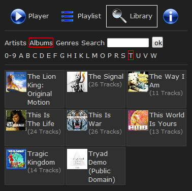

|
The Nemp Webserver
|
The Nemp Webserver allows you to access Nemp through a network by any
browser. It is not for streaming the music to other devices, but a
remote control (like view the next items in the playlist, add songs to
the playlist, ...).

Activate the webserver
You can activate the webserver through the menu "Tools -> Nemp
Webserver -> activate". If the Nemp webserver is active, there
will be an icon  in the main window.
in the main window.
Tip: Just try it!
Activate the webserver, connect your smartphone with your WLAN, and
enter the IP-address shown in the webserver settings.
According to the selected theme, you may have more or less
possibilities to control Nemp.
- The default theme gives you (and all other users) full
access to the player, if you didn't forbid some features in the
settings. This theme requires Javascript in the browser.
- The theme "No Javascript" doesn't use Javascript, but some
features are missing, like volume control and scrolling within the
current title.
- The "Party" theme gives you full access only in admin mode
(add "/admin" to the URL), and limited access to other people
on your party.
Tip: Get for your party
another WLAN Access Point, and create a local open network. With a
local DNS server it is possible to replace the "IP-URL" by a "real one"
like "http://music.party". Details on my website www.gausi.de.
Access from everywhere
If you want to allow your friends to access Nemp from
everywhere, you can uncheck the setting "Permit access only from LAN".
Additionally you probably need to configure your router properly ("port
forwarding").
Your friends need your IP (the "Internet IP", not the local one) and
(optionally) username and password.
Warning!
If you allow access from everywhere without setting a password, then
everybody may have access to your complete music library. By activating
the Nemp webserver (and doing portforwarding and stuff) you have
effectively created a website, where everybody can download hundreds or
thousend of music files. Most of them are probably copyrighted, and
this would be a very, very bad idea!
Don't do
this!